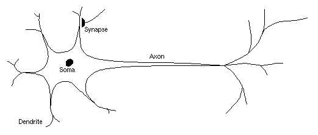
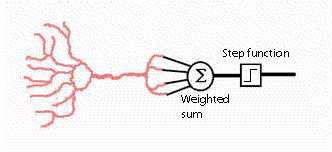

The perceptron is a mathematical model of a biological neuron. While in actual neurons the dendrite receives electrical signals from the axons of other neurons, in the perceptron these electrical signals are represented as numerical values. At the synapses between the dendrite and axons, electrical signals are modulated in various amounts. This is also modeled in the perceptron by multiplying each input value by a value called the weight. An actual neuron fires an output signal only when the total strength of the input signals exceed a certain threshold. We model this phenomenon in a perceptron by calculating the weighted sum of the inputs to represent the total strength of the input signals, and applying a step function on the sum to determine its output. As in biological neural networks, this output is fed to other perceptrons.
|  |  |
| A biological neuron | An artificial neuron (perceptron) |
| Output of P = | {1 if A x + B y > C |
| {0 if A x + B y < = C |
| x1 | x2 | y |
| 1 | 1 | 1 |
| 1 | 0 | -1 |
| 0 | 1 | -1 |
| 0 | 0 | -1 |
| x1 | x2 | y |
| 1 | 1 | 1 |
| 1 | 0 | 1 |
| 0 | 1 | 1 |
| 0 | 0 | -1 |
- Draw graph 3 - scatter plot of AND and scatter plot of OR
- Show how Perceptron can't solve XOR table
- Layer 2 Perceptrons to solve XOR problem